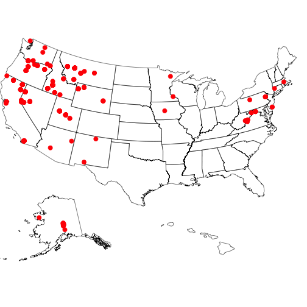

Wrapper for the USGS Bison (https://bison.usgs.gov) API
Description
USGS Biodiversity Information Serving Our Nation (BISON) is a web-based federal mapping resource that provides access to georeferenced (those with latitude and longitude coordinates) and non-georeferenced data describing the occurrence or presence of terrestrial and aquatic species recorded or collected by a person (or instrument) at a specific time in the United States, U.S. Territories, U.S. Marine Exclusive Economic Zones (EEZs), and Canada. Each record in a species occurrence dataset available in BISON will typically consist of a scientific name (genus and specific epithet), a date, and one or more geographic references such as a state name, county name, and/or decimal latitude and longitude coordinates. In addition to these typical data fields, species occurrence datasets often include many other data fields that describe each species occurrence event in more detail.
BISON is the US Node of GBIF and regularly updates from GBIF to have full coverage and is committed to eventually providing most BISON originating data to GBIF, however, users should be aware that several million BISON records are not in GBIF. The Solr API for BISON is fully open with no limits, allowing full batch download, faceting and geospatial searches on both DC fields and BISON added fields such as the full ITIS taxonomy, FIPS Codes, and georeferencing of county records to documented centroids.
rbison allows one to pull species occurrence data from these datasets, inspect species occurance summaries, and then map species occurance within the US, within the contiguous 48 states, and/or at county or state level.
Current data providers for BISON can be found at https://bison.usgs.gov/providers.jsp
See https://bison.usgs.gov/doc/api.jsp for API docs for the BISON API.
Installation
From CRAN
install.packages("rbison")Or the development version from Github
remotes::install_github("ropensci/rbison")Load package
Notice that the function bisonmap automagically selects the map extent to plot for you, being one of the contiguous lower 48 states, or the lower 48 plus AK and HI, or a global map. If some or all points outside the US, a global map is drawn, and throws a warning. . You may want to make sure the occurrence lat/long coordinates are correct.
get data
out <- bison(species = "Phocoenoides dalli dalli", count = 10)All points within the US (including AK and HI)
get data
out <- bison(species = "Cyanocitta stelleri", count = 500)All points within the contiguous 48 states
get data
out <- bison(species = "Aquila chrysaetos", count = 300)BISON SOLR interface
taxa
The taxa service searches for and gives back taxonomic names
bison_tax(query = "*bear")
#> $numFound
#> [1] 54
#>
#> $names
#> lc_vernacularName vernacularName
#> 1 American black bear American black bear
#> 2 American Black Bear American Black Bear
#> 3 Asian Black Bear Asian Black Bear
#> 4 Asiatic black bear Asiatic black bear
#> 5 banded woollybear banded woollybear
#> 6 Bear Canyon talussnail Bear Canyon talussnail
#> 7 Bear Creek slitmouth Bear Creek slitmouth
#> 8 bear daisy bear daisy
#> 9 bear flower bear flower
#> 10 bear garlic bear garlic
#>
#> $highlight
#> NULL
#>
#> $facets
#> NULLAnd you can search by scientific name
bison_tax(query = "Helianthus*", method = "scientificName")
#> $numFound
#> [1] 240
#>
#> $names
#> scientificName
#> 1 Discoaster helianthus
#> 2 Helianthus decapetalus
#> 3 Helianthus ambiguus
#> 4 Helianthus crassifolius
#> 5 Helianthus dowellianus
#> 6 Helianthus luxurians
#> 7 Helianthus arenicola
#> 8 Helianthus atrorubens
#> 9 Helianthus frondosus
#> 10 Helianthus nuttallii canadensis
#>
#> $highlight
#> NULL
#>
#> $facets
#> NULLoccurrence search
The occurrence service searches by scientific names and gives back occurrence data similar to data given back by the bison() function
Searching for data and looking at output
x <- bison_solr(scientificName = "Aquila chrysaetos", rows = 10,
fl = "scientificName,decimalLongitude,decimalLatitude")
x$points
#> scientificName
#> 1 Aquila chrysaetos
#> 2 Aquila chrysaetos
#> 3 Aquila chrysaetos
#> 4 Aquila chrysaetos
#> 5 Aquila chrysaetos
#> 6 Aquila chrysaetos
#> 7 Aquila chrysaetos
#> 8 Aquila chrysaetos
#> 9 Aquila chrysaetos
#> 10 Aquila chrysaetosMapping the data
out <- bison_solr(scientificName = "Aquila chrysaetos", rows = 1000)
bisonmap(out)
Meta
- Please report any issues or bugs.
- License: MIT
- Get citation information for
rbisonin R doingcitation(package = 'rbison') - Please note that this project is released with a Contributor Code of Conduct. By participating in this project you agree to abide by its terms.
This package is part of a richer suite called SPOCC Species Occurrence Data (https://github.com/ropensci/spocc), along with several other packages, that provide access to occurrence records from multiple databases. We recommend using SPOCC as the primary R interface to rbison unless your needs are limited to this single source.